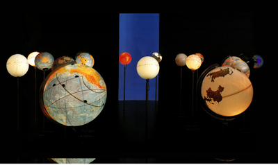

|
Edge Conditions
|
|
Written by Michela Pilo
|
|
Jun 16, 2006 at 01:03 PM |
 Ingo Günther, World Processor, 1988-2006
30 illuminated globes on stands Although once a radical idea, our understanding of the Earth as a sphere is so commonplace as to be unremarkable. And at first glance, Ingo Günther’s glowing globes exude an aura of nostalgia; an almost visceral memory of Enlightenment libraries when such globes were on the front lines of discovery. By overlaying the familiar with current geosocial and scientific data, however, Günther implicitly, mostly neutrally, raises issues of globalization. As the world gets smaller through the “nervous system” of communications technology (Marshall McLuhan) and becomes “flatter” (Thomas Friedman), what is the effect on us, our businesses, our nations, the earth? Wandering through the illuminated sea of globes, viewers can draw their own conclusions; make their own visual hyperlinks. What is the relationship, for instance, between TV Ownership and Energy Consumption and Infant Mortality Rates and Landlocked Nations and Post-WWII Peaceful Countries? This is World(view) processing.
[1-5] TV Ownership
[6-2] Ocean World [7-2] Landlocked Nations
[8-5] Life Expectancy
[11] Statistical Challenges
[19-4] Refugee Currents
[56-3] Percentage of World Energy Consumption in 2000
[59-5 Rain] Forest Leftovers
[63] Population Distribution
[66-5] Earth in 80 Languages
[69-1] Depleted Fishing Grounds
[74-3] 100 Projection Problems
[94] US GNP vs. the Poorest Countries
[97-8] Political Borders
[101-1] Tropics
[107-3] Extended Exclusive Maritime Economic Zones (EEZs)
[138-5] Postwar (WW II) Peaceful Countries
[155-11] Company vs. Country
[156] Global Trade Currents
[171] Infant Mortality
[174] Human Development Index
[189] G8
[211-2] Bad "Carma”
[221-3] Internet Users
[225-3] Terrorism
[246-3] 40 Biggest Cities
[251-2] Birth Rates [257-2] Mononational States
[270-2] Stunted Children
[286] Patents |
|
Last Updated ( Jun 22, 2006 at 03:16 PM )
|